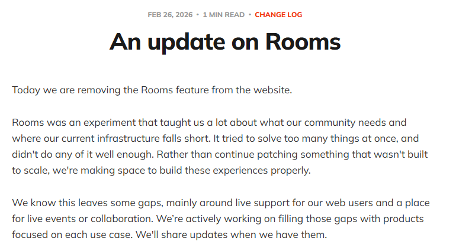

P25-midjourney-e1 · 用户自述
匿名A称成立小型业务，使用Midjourney与Photoshop制作影视和广告前期材料；后续说明会合成相近图片并局部处理。
2023-09；历史 · 观察：2026-09-10
2023自述；无客户验收、收入和当前继续经营证据。
Midjourney 用户用图像草案表达视觉想法，也为个人兴趣生成画面。多位用户会继续用 Photoshop、手绘、3D或视频工具加工。现有任务记录多来自旧版本；2026年的职业分布与续费情况仍缺数据，不能从风格代码和套餐推定。
| 内容使用者 | 内容供给者 | 付款方 |
|---|---|---|
| 个人表达者、概念与参考图制作者；发作品不是职业证明。 | 公开作品、风格和经验分享者；不主张存在普通模型卖方市场。 | 订阅账号使用者与代员工付款的组织；当前样本中的雇主付款未核验。 |
壁纸、绘画参考、桌游等任务，不推定职业。 · 有3个历史用户点，当前仍为候选
| 观察点 | 群体占比 |
|---|---|
| 3个可区分用户点 | 未知 |
| 问题 | 具体材料 |
|---|---|
| 任务 | 给想象中的场景、卡牌或手工作品准备画面。 |
| 触发 | 新的桌游情节、创作灵感或个人审美探索。 |
| 希望取得的结果 | 得到想保留的图，或更容易继续自己的创作。 |
| 困难 | 生成风格可能与心中意图不同。；个人需求是否值得长期订阅因频率而异。 |
| 需要的内容 | 视觉示例、风格参考、可调整提示与失败边界。 |
| 替代方法 | 现成素材搜索、手绘和其他图像工具。 |
| 持续使用记录 | G描述反复辅助绘画；F/H有实际用途自述，没有长期续费。 |
| 回访假设 | 新的题材和个人创作习惯可能带来回访。 |
| 付费记录 | 历史公开自述没有明确支付方和订阅轨迹。 |
5个独立历史任务点加1个2026跨工具点；是流程角色，不是职业占比。 · 历史任务证据较充分；2026现用户结构仍未知
| 观察点 | 群体占比 |
|---|---|
| 6个可区分用户点 | 未知 |
| 问题 | 具体材料 |
|---|---|
| 任务 | 制作概念、构图、情绪板、客户沟通图或视频角色参考。 |
| 触发 | 文字难以表达视觉要求，现成图库找不到合适场景。 |
| 希望取得的结果 | 尽早确定方向，得到能交给后续绘画、合成、3D或视频步骤的材料。 |
| 困难 | 成图好看仍可能不满足结构和精确表达。；局部修改、系列一致性与生产细节要继续加工。 |
| 需要的内容 | 同一简报的多方向、参考选择理由、后期改动和验收前后对照。 |
| 替代方法 | Pinterest/Behance找参考、图库、手画草图和3D预演。 |
| 持续使用记录 | A至E描述实际工序，但多为2022–2023旧版本；I补2026角色参考用法，尚无持续续费链。 |
| 回访假设 | 下一次简报与熟悉的风格方法可能带来重复使用。 |
| 付费记录 | 有职业自述不等于已验证订单；不知道个人或雇主付款。 |
采购角色而非新增创作任务。 · 官方采购路径支持的候选，0个独立买方点
| 观察点 | 群体占比 |
|---|---|
| 0个可区分用户点 | 未知 |
| 问题 | 具体材料 |
|---|---|
| 任务 | 为已在使用的员工处理账号订阅和账单。 |
| 触发 | 多人使用导致付款与报销分散。 |
| 希望取得的结果 | 购买路径清晰，员工维持各自账号。 |
| 困难 | 统一付款不等于资产协作、管理或安全能力全部具备。；是否续订依赖员工实际成果。 |
| 需要的内容 | 采购条件、使用责任和具体项目价值材料。 |
| 替代方法 | 员工个人订阅报销，或现有团队创作工具。 |
| 持续使用记录 | 仅有官方账单说明，没有企业买方复购或账号使用记录。 |
| 回访假设 | 持续项目需要可能维持采购。 |
| 付费记录 | 采购路径存在；客户数、规模及续约未知。 |
| 产品提供 | 内容形态 | 如何发挥作用 | 观察结果 | 剩余工作 |
|---|---|---|---|---|
| 生成候选图、风格预览和可复用风格代码。 | 图像、风格代码与提示。 | 先看视觉方向，再带入自己的题材迭代。 | G把图用作绘画参考；D补情绪板；具体需求从想法推进到可讨论视觉。 | 审美符合不代表结构准确或业务成果。 |
用户自述的参考采用
| 产品提供 | 内容形态 | 如何发挥作用 | 观察结果 | 剩余工作 |
|---|---|---|---|---|
| 较完整的概念图、角色参考和多方案。 | 视觉草案与角色图。 | 用于前期沟通，再进入手工或其他软件。 | B重画矢量、C交绘画作者、D做3D、I在外部做口型；链路分工明确。 | 完整交付、客户验收和节省工时尚未验证。 |
前期材料采用
| 产品提供 | 内容形态 | 如何发挥作用 | 观察结果 | 剩余工作 |
|---|---|---|---|---|
| 独立账号的批量账单安排。 | 订阅与账单。 | 组织统一采购，个人账号继续创作。 | 官方规则确认可采购；没有已核验组织案例。 | 组织管理范围、实际席位及商业留存未知。 |
官方采购能力
匿名A称成立小型业务，使用Midjourney与Photoshop制作影视和广告前期材料；后续说明会合成相近图片并局部处理。
2023-09；历史 · 观察：2026-09-10
2023自述；无客户验收、收入和当前继续经营证据。
匿名B用生成图寻找插画构图，再手工重画为矢量插画，因原图有缺手和肢体连接等问题。
2023-09；历史 · 观察：2026-09-10
旧版本局限，不当作当前每次生成故障。
匿名C自称写作者，用图像帮助写作和书封沟通；封面仍交由数字绘画或插画作者完成。
2023-09；历史 · 观察：2026-09-10
只证明沟通参考用途，不证明书籍销量和封面实际采用。
匿名D自称零售概念设计者，用生成图补Pinterest找不到的情绪板；最终仍需3D图和生产细节。
2023-09；历史 · 观察：2026-09-10
同一人的多次回复算1点；没有生产图交付证据。
匿名E用较完整的效果草图帮助客户理解成品大致样貌，明确当时还不适合精确草图。
2022-09；历史 · 观察：2026-09-10
2022个案；不能当当前模型能力上限。
匿名F做个人壁纸和展示图，表示纯粹为了乐趣，打印挂墙尚为可能。
2023-02-14；历史 · 观察：2026-09-10
已有壁纸为自述；打印未完成。
匿名G先生成想法再画水彩，认为可视化让自己更愿意画画。
2023-02-14；历史 · 观察：2026-09-10
表达主观体验，无技能或效率对照实验。
匿名H称制作桌游卡牌视觉及DnD战役辅助图。
2023-02-14；历史 · 观察：2026-09-10
个人桌游用途，不据此推定游戏行业职业。
匿名I在音乐视频流程里用Midjourney准备角色参考图，再在OpenArt制作口型片段。
2026；评论相对日期 · 观察：2026-09-10
与OpenArt同一人；Midjourney付款不明确。
Style Creator通过选择预览得到可继续调用的风格代码，支持查看、尝试和收藏；预览/生成涉及GPU时间。
未标日期 · 观察：2026-09-10
未运行工具；代码复用不等于完整工程和源素材。
官方提供按独立账号组织批量账单的采购路径；组织付款不自动等于复杂企业协作。
未标日期 · 观察：2026-09-09
既有来源审阅；无独立采购客户数量。
Midjourney · 动态帮助页，访问2026-09-09 · 查阅：2026-09-09
审阅既有baseline-segments.json及证据报告所载来源，原页上次读取为2026-09-09；未逐页复核。当前订阅、GPU时间与私密性；所有商业权利仍受条款约束。
Midjourney · 未标日期 · 查阅：2026-09-09
审阅既有baseline-segments.json及证据报告所载来源，原页上次读取为2026-09-09；未逐页复核。区分网页/Discord与niji应用试用。
Midjourney · 未标日期 · 查阅：2026-09-09
审阅既有baseline-segments.json及证据报告所载来源，原页上次读取为2026-09-09；未逐页复核。批量账单与未提供的企业管理能力。
Midjourney · 未标日期 · 查阅：2026-09-09
审阅既有baseline-segments.json及证据报告所载来源，原页上次读取为2026-09-09；未逐页复核。普通开放API与少数获授权例外有别。
Forbes，引用PitchBook · 2026-04-16 · 查阅：2026-09-09
审阅既有baseline-segments.json及证据报告所载来源，原页上次读取为2026-09-09；未逐页复核。2024财年收入约3亿美元，非审计原件；亦提及Meta授权，未给金额。
Reddit公开讨论 · 2023-09；历史 · 查阅：2026-09-10
正文读取；按不同公开回复区分匿名A至D；不采用评论中的法律判断。
Reddit公开讨论 · 2023-02-14；历史 · 查阅：2026-09-10
正文定位读取；不同用户的壁纸、绘画参考和桌游辅助任务；未验证其后续身份。
Reddit公开讨论 · 2022-09；历史 · 查阅：2026-09-10
正文定位读取；匿名E说明给客户看大致完成效果的草案，未来用途不算已采用。
Reddit公开讨论 · 2026；评论相对日期 · 查阅：2026-09-10
正文读取；与OpenArt匿名B为同一人；不另计跨平台人数。
Midjourney · 未标日期 · 查阅：2026-09-10
正文访问与定位；预览、风格代码、收藏和GPU消耗说明；未实际生成。
Midjourney作品展示结果，Moodboard组织风格参考，Tasks采集成员判断。复用时需注明取得的是图片、风格版本还是过程材料。
Explore 策展候选中的一幅图像及详情。
| 样例 | 可以取得什么 | 后续动作 | 条件与限制 |
|---|---|---|---|
| Complete Tasks 的 Curate Explore 示例。 | 展示和提示参考；并非完整工作流。 | 文档支持打开详情、收藏和投票；未执行。 | 所读任务页没有承诺每件作品公开全部参考、后期和生成参数。 |
一组被选择的图像及可调用的风格引用。
| 样例 | 可以取得什么 | 后续动作 | 条件与限制 |
|---|---|---|---|
| Moodboards 官方创建、调用和管理说明。 | 可用于生成的风格配置，深于仅看图片。 | 可在提示中使用板ID或历史代码；新调用按工具条件处理。 | 适用版本和参数有边界；风格板不是参考图文件的通用导出包。 |
由平台给定候选材料并要求选择的交互题。
| 样例 | 可以取得什么 | 后续动作 | 条件与限制 |
|---|---|---|---|
| 个人审美、Curate Explore、新版本评价。 | 结构化偏好输入；不是公开作品评分榜的统一单位。 | 可按说明贡献选择；奖励只适用于部分任务。 | 不同任务产出的数据用途不同，不可合并成同一内容质量分。 |
官方文档示例拆解，没有读取或使用用户私人风格板，也未生成对照图。
| 材料部分 | 观察到什么 | 作用分析 |
|---|---|---|
| 参考材料 | 允许从设备、图片URL和自己的图库加入图像，并命名风格板。 | 让创作意图通过一组视觉参照表达，名称只帮助识别，不能替代图片内容。 |
| 当前状态 | 板有ID，内容更新会产生新的版本代码。 | ID适合继续沿用当前选择；讨论旧结果时需要保留当时状态。 |
| 调用痕迹 | 提示可使用ID或过去提示中的代码；提交后ID转换为具体代码。 | 让结果与一个风格版本有关联，便于描述使用条件。 |
| 停止维护后的边界 | 删除板后不能再添加参考，但已产生代码仍可使用。 | 可继续引用与可继续编辑是不同能力，不能只用“已删除”概括全部效果。 |
代码继续有效不证明长期效果不变，更不能证明跨工具还原同样审美。
| 可取得或继承 | 还需准备 | 不能直接迁移 |
|---|---|---|
| 已公开作品详情可提供图片与提示线索；风格板文档提供ID、历史代码和调用方式。 | 仍需自己的任务提示、相容模型与参数、生成资源，以及输出选择和必要编辑。 | 风格代码是平台内引用，不是可在任意工具执行的节点图；原始参考的跨账户继承范围资料不足。 |
Midjourney将成员选图分别用于个人偏好、Explore策展和新版本评价，奖励与订阅条件相关。风格资产支持继续创作，求助由专门入口处理；不同参与动作不能合算为社区贡献。
Tasks 分开个人审美选择、Explore 推荐投票和新版本两图评价。
| 执行与分工 | 触发与节奏 | 运营作用（分析） | 失效条件 |
|---|---|---|---|
| 平台布置任务；成员按该任务选择或跳过。 | 新版本评价在发布前可能出现，其余具体刷新频率未知。 | 收集的行为有明确用途，不是只有点赞计数。 | 投票权重、筛选阈值和实际质量改进未公开。 |
Curate Explore 让成员从图组挑选值得推荐的一张，还可查看作者和提示。
| 执行与分工 | 触发与节奏 | 运营作用（分析） | 失效条件 |
|---|---|---|---|
| 平台提供候选；成员投票，平台执行分发。 | 每次完成一组选择；最终推荐周期未知。 | 浏览者可以同时贡献策展判断并发现创作方法。 | 文档说投票帮助决定展示，不等于单票直接决定全站排序。 |
每天评分最多的前2,000名获1小时Fast time；须有效订阅接收和使用，奖励30天过期。
| 执行与分工 | 触发与节奏 | 运营作用（分析） | 失效条件 |
|---|---|---|---|
| 系统记录和通知；参与者满足竞争排名与订阅条件。 | 按日排名；问卷奖励另随开放任务变化。 | 这是订阅使用中的资源补充，并非给所有访客的免费生成。 | 不是完成任一评分必得，也没有停奖后的贡献数据。 |
Moodboard 更新会形成新代码；旧提示中的代码继续指向既有版本。
| 执行与分工 | 触发与节奏 | 运营作用（分析） | 失效条件 |
|---|---|---|---|
| 使用者维护选图；平台保留版本引用。 | 添加或移除参考图、再次生成时触发。 | 可以继续同一审美方向，也能比较变化。 | 能引用不等于出图一致；风格板对续费影响未知。 |
官方公告确认网站Rooms已撤下，求助指向帮助页和Discord。
| 执行与分工 | 触发与节奏 | 运营作用（分析） | 失效条件 |
|---|---|---|---|
| 官方调整入口，社区成员及helpers提供帮助。 | 公告日期2026-02-26；后续人力安排未知。 | 把活动、合作和求助视为不同运营工作。 | 不能从单项下线认定社区整体失败，替代效果未核。 |
当前两份官方帮助的机制实例，没有提交实际评价。
平台需提供候选、区分任务和奖励记录；分析上应避免把刷量与有效审美判断混在一起。
不能把一次评价、一次收藏和一小时奖励等价成创作者作品采用；质量、反作弊与转化未公开。
| 供给者回报 | 参与者回报 | 与付费的连接 |
|---|---|---|
| 未取得普通公开作品按篇分成的规则，资料不足；不与评价奖励混用。 | 部分任务给Fast time，另一些用于个人审美；必须阅读对应任务说明。 | 获奖资源仍绑定有效订阅，奖励到期不能当作长期余额。 |
| 持续工作 | 尚未量化的成本 | 成立条件 |
|---|---|---|
| 安排评价任务、说明用途、维护奖励可查性与专门求助渠道。 | 分析：候选质量、异常参与及求助响应都需要持续维护，资料没有具体工时。 | 已有稳定的生成与评价需求；没有这些前提，积分任务可能只吸引争奖者。 |
Midjourney先以订阅提供生成服务，再按速度、并发和私密权益分档。采用类似收费方式，需先验证用户是否愿意为具体效果与权益付款。
| 付款方 | 收入方式 |
|---|---|
| 个人创作者、专业设计者，以及为员工购买独立账号的组织；普通公开浏览者与 Discord 成员不能等同于付费用户。 | 分档订阅加快速 GPU 时间加购；存在媒体报道的技术授权合作，但未公开收入拆分。 |
当前官方说明：网页与 Discord 不提供免费试用，niji journey 手机应用有有限试用。用户通过作品和口碑形成预期，再付费进入生产。这种收费入口筛选了较强意愿，但需要品牌与稳定效果支撑，不能只复制付费墙。
官方月度套餐为10、30、60、120美元，快速 GPU 时长逐级提高，可按4美元每小时加购。Standard 起有 Relax 图像生成，Pro/Mega 提供 Stealth；视频的 Relax 范围有限定。合理推断：专业用户不只比较总生成量，还衡量等待和能否公开自己的项目。
官方支持满足条件的大批量年度 Pro/Mega 订阅统一账单，但明确不提供席位管理、SSO 和合同条款谈判。公开商业使用条件也会按企业收入要求高级套餐。它说明强产品可以先卖给公司里的个人，不必一开始就建齐企业管理系统。
社区规则说明除少量明确授权例外外，未提供 API，且限制未授权自动化与转售。媒体报道过与 Meta 的技术授权合作，但金额未披露。研究多元拾光的低价 API 优势时，应把模型官方授权、第三方转接与终端订阅分开，不能合并为同一商业路径。
2026-09-11官方月付Basic/Standard/Pro/Mega为10/30/60/120美元；年付总额96/288/576/1152美元，自动续订。Relax图片从Standard起，SD视频从Pro起；Stealth仅Pro/Mega。必须按保密和所需输出模式选档，不能用最低价代表全部权益。 地区税费及实际购买未核；作品售卖和平台订阅收入不可由案例推算。
| 指标 | 披露值 | 期间与对象 | 解释 | 限制 |
|---|---|---|---|---|
| 历史年度收入 | 约3亿美元 | 2024财年；Forbes于2026-04-16更新；Midjourney 公司 | Forbes 引用 PitchBook，说明其订阅等业务达到较大历史规模。 | 未见公司审计财务；不是2026收入，也不是ARR；无法拆分图像、视频、授权与其他收入。 |
| 当前付费用户与MAU | 未公开核实 | 截至2026-09-09；Midjourney 网页与Discord生成服务 | 现有公开材料不足以计算付费率、ARPPU或活跃份额。 | Discord累计成员、网站访问与付费账号存在口径差异，不能互换。 |
Midjourney · 动态帮助页，访问2026-09-09 · 查阅：2026-09-09
当前订阅、GPU时间与私密性；所有商业权利仍受条款约束。
Midjourney · 未标日期 · 查阅：2026-09-09
区分网页/Discord与niji应用试用。
Midjourney · 未标日期 · 查阅：2026-09-09
批量账单与未提供的企业管理能力。
Midjourney · 未标日期 · 查阅：2026-09-09
普通开放API与少数获授权例外有别。
Forbes，引用PitchBook · 2026-04-16 · 查阅：2026-09-09
2024财年收入约3亿美元，非审计原件；亦提及Meta授权，未给金额。
Midjourney · 动态帮助页，无发布日期 · 查阅：2026-09-11
本次原页正文读取；未购买 当前月/年价格、Relax图像/SD视频分档、Stealth及自动续订。
官方文档已核：网页与 Discord 没有免费试用。当前标签仍停在注册入口，未进入创作工作区；未订阅或提交生成。

该公告把功能下线与过多目标、扩展问题关联，是分析聊天室取舍的直接证据。
官方公告页，非当前创作界面；没有免费网页生成实操。
来源页面 ↗| 阶段 | 用户动作 | 可能遇到的障碍 |
|---|---|---|
| 发现与进入 | 从效果和风格发现进入。 | 只复制提示词，未必拿到相同参考和偏好设置。 |
| 第一次做成 | 理解参考与风格，完成自己的图。 | 默认偏好可能影响结果，需要知道本次用了什么。 |
| 再次使用 | 继续项目或再次使用已整理的风格资料。 | 追随最新风格与复用历史版本并不相同。 |
| 贡献给别人 | 分享风格、方法或到合适渠道答疑。 | 即时支持和活动需要专门运营，不会随生成自动成立。 |
用户应能辨认当前用了哪份风格资料、是在复用旧版本还是跟随最新版本。灵感整理与生成设置相连，才可能减少下一次重复准备。
聊天室存在过又下线，说明体验研究要看功能是否匹配任务和维护能力。不能把成熟平台曾做过的所有功能都列进多元拾光路线图。
网站概览介绍 Explore 的推荐、随机、热门与排名；作品详情可复用图像、文本或寻找相似内容。Style Explorer、Likes、Moodboards 和 Personalization 将灵感逐步连接到个人偏好和后续创作。
资料页可以策展作品，但档案只对登录成员可见，关注列表与数量有隐私限制。不能假设公开分享链接对游客完整展示所有社交信息。
创作默认公开，作者不必再写一篇帖子才进入发现体系。需要保密的用户要考虑特定套餐的 Stealth；在共享 Discord 频道中的内容仍有可见边界。
新手指南的生成起点是登录并订阅，网站与 Discord 没有通用免费试用。这意味着这里的付费门槛依赖工具吸引力，不能直接作为尚无稳定案例的新社区冷启动模板。
Discord 的合作案例回顾，团队先测试用户偏好的交流方式，再从小型邀请测试扩大，并曾让付费订阅者邀请朋友。它说明平台选择与早期互动设计是有意为之。
这是合作方回顾，不能从今天的规模倒推出邀请机制的单独效果，也没有多元拾光能直接沿用的种子获客成本。
评分任务可以获得 Fast 时间，但奖励有参与量、有效订阅和到期条件；它更像研究反馈换资源，不是无条件签到。外部社群还组织 office hours、项目交流和提示词讨论。
工具需求、审美积累和同行帮助可能支持反复使用；未找到独立于生成产品的社区留存数据，也没有普遍发图现金奖励的确证。
2026 年 2 月 26 日官方宣布移除 Web Rooms，说明它同时承担过多目标、效果和扩展不足；支持入口与 Discord 继续承接求助，其他缺口按具体场景另行处理。
Moodboards 文档区分随板子更新的 ID 和记录当时状态的历史代码。这让收藏有了继续制作的用途，也带来了版本选择需要。
| 做法 | 依据 | 投入 | 调整条件 |
|---|---|---|---|
| 运营维护作品和方法的主题关联、收藏与版本说明，观察用户是在欣赏、查参考还是准备制作。 | 找灵感、回看风格和交流偏好可独立产生价值；制作设置是有需要时的后续材料。 | 初期用现有合集、收藏和内容关联，计入选片、说明更新与回应工时。 | 反复回看同类内容或收藏者增加时改进找回；反复使用参数者增加时再补制作上下文。 |
| 做法 | 依据 | 投入 | 调整条件 |
|---|---|---|---|
| 把答疑、活动和作品方法先放在各自明确的入口。 | 即时交流需要有人响应。已有平台的下线记录说明多用途聊天模块也会失败。 | 用户暂时跨工具交流，运营需将关键解法归档。 | 有稳定讨论需求，现有沟通方式反复造成信息丢失或协作阻塞，再评估站内交流。 |
官方 · 未标更新日
发现、复用及个人资产
官方 · 未标更新日
订阅先于生成
官方 · 访问 2026-09-08
套餐与隐私分档
官方 · 未标更新日
任务奖励与到期条件
官方 · 未标更新日
策展、登录可见与关注隐私
官方 · 未标更新日
默认公开与共享频道边界
官方合作案例 · 未标发布日期
用户测试与邀请历史
官方 · 未标更新日
聊天信息与创作资产组织的摩擦
官方 · 访问 2026-09-08
office hours、项目与提示交流
官方 · 2026-02-26
明确下线 Web Rooms 与原因
官方 · 未标更新时间；访问 2026-09-09
ID、历史代码和重复使用
已补2025—2026同一漫画作者的作品、教程及读者追问；另找到2026年用户失败后明确转用其他工具完成原任务。Midjourney可承担构图、风格和候选画面，连续漫画仍需要角色表、筛选、拼贴与排字。作品可发布与作者认为达到可售标准是不同结论；旧版或V7个案不能当2026所有版本上限。
新增具体画像是持续写漫画并制作页面的独立作者，以及为歌曲制作指定烟字火车图的个人作者；前者有跨年项目、后者有精确视觉目标。二者都不能由发帖推定客户收入或专业占比。
同一作者把作品页、2025教程和2026复盘互链，公开角色主提示、参考图/脸部裁切及后期办法；2026年读者求完整提示，作者11天后给提示和多次生成/参考复用方法，读者是否复现未知。
跨日期的作者答疑说明作品可引出方法需求；收到提示不等于得到相同结果。官方社区规则将产品和社区访问分开，并限制未经授权自动化；不能据第三方聚合工具宣传假定普通开放API可用。
2026-09-11官方月付Basic/Standard/Pro/Mega为10/30/60/120美元；年付总额96/288/576/1152美元，自动续订。Relax图片从Standard起，SD视频从Pro起；Stealth仅Pro/Mega。必须按保密和所需输出模式选档，不能用最低价代表全部权益。
漫画作者2025制作前两部分，2026又用V7完成第5部分并公开比较；既有输出却仍报告多人/环境一致性问题。另一2026失败用户称取消订阅、用Ideogram/Copilot/Photoshop完成歌曲图，后来登录新版入口但只表示再试，不算复购。
原失败用户明确完成的替代路径是Ideogram起图、Copilot修改、Photoshop微调；漫画作者2025已经用Photoshop修细节/文字，2026提到过去比较和未来再测ChatGPT。将实际采用和未来比较计划分开。
任务：持续制作The Last Superhero系列漫画，保持人物、场景和页面风格。
困难：多人物互相串特征、环境和风格漂移，文字/局部细节需另行处理。
结果：作品/方法跨日期公开与同一作者持续制作可确认；不是不间断订阅或商业售卖证据。
尚缺：未逐图验质、核成本或收益；读者是否完成原近景任务未知；作者对V8看法不是本次实测。
任务：给歌曲制作火车烟雾组成特定字样的插画。
困难：自述Midjourney结果与明确文字/空间要求不符。
结果：失败任务有本人明确替代完成与后续动作，不应仍标为纯抱怨或没有解决办法。
尚缺：未播放歌曲视频或核账；新版MJ重试、重新订阅没有结果。
方法可读与方法交付有效不是一回事。
同一读者后续结果/失败细节及作者修订，或授权的独立复现。
公开发布不等于商业验收。
作者后续明确交付状态与买方/发行证据；不以作品数量代替。
登录新入口只是尝试动作。
本人新结果、继续使用或续费确认，未取得前保留未知。
本次原页正文读取；未购买
当前月/年价格、Relax图像/SD视频分档、Stealth及自动续订。
本次原页正文读取
普通开放API缺失、授权例外、禁止未授权自动化/共享，以及社区与产品访问分开。
本次正文与读者/作者评论读取
早期漫画制作、Photoshop/文字处理；读者难复现和作者后续解释。
本次全文读取；未执行教程或采其速度估计为基准
同一作者新项目/旧教程关联、角色表、持续控制困难与版本边界。
本次作品页正文和图片入口读取，未逐图视觉验质
作品页公开、主要V7及后续评测承接。
本次原帖及作者后续读取；不沿用标题定性
精确文字图任务、替代完成、取消自述和新版入口重试意愿。
能否替换过多2022/2023样本，补2026使用和跨日方法？：搜索2026漫画/客户任务，打开同作者2025教程、2026第5部分、2026复盘与评论。；可确认跨年制作及读者提问—作者答复；尚无读者成功确认和客户验收。
失败是否导致实际替代或只是情绪？：2026-04精确烟字图讨论主帖和作者回复。；本人确认外部工具完成；承诺再试新版不算重新采用/续费。
当前专业用途的付费和自动化门槛？：官方套餐和Community Guidelines。；现行套餐分档可核；普通开放API仍不可假设，所有隐私/使用范围仍受规则约束。